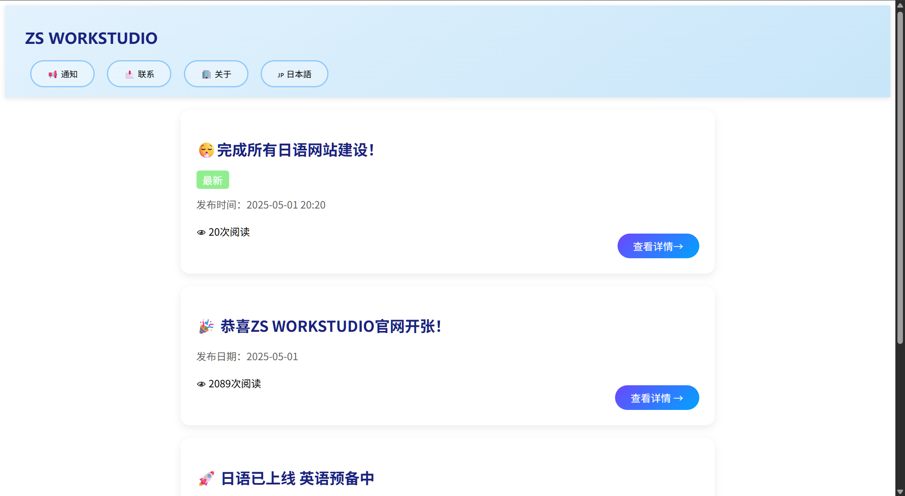
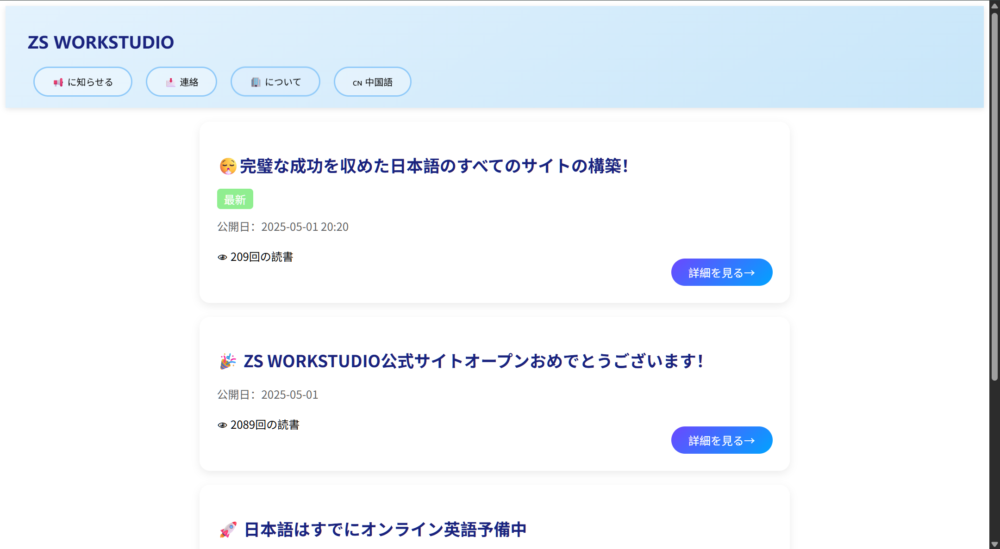
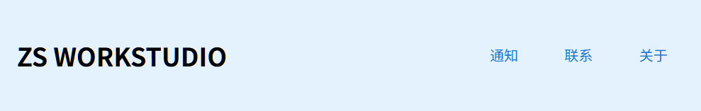
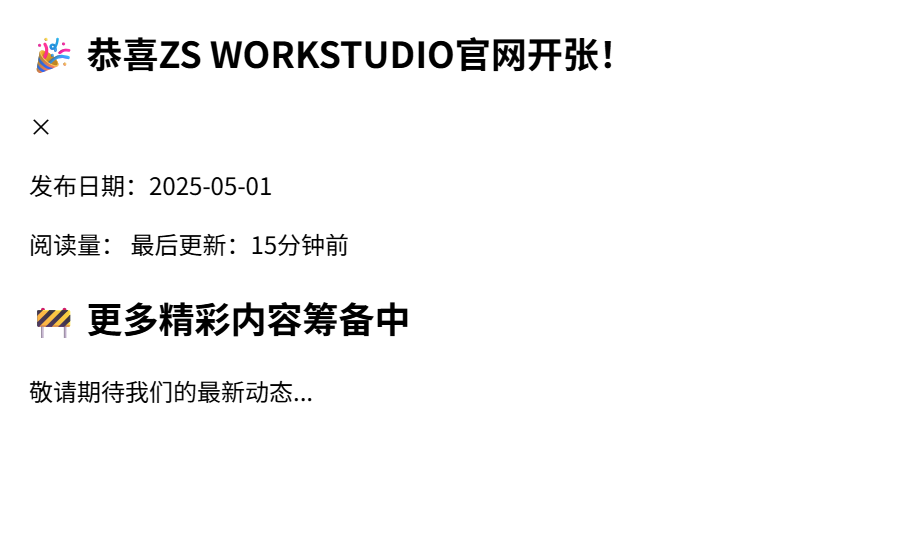

😮💨すべての日本語サイトの構築を完了
公開日：2025-05-01 22:20
正直に言うと、私たちは今晩約1時間で2つの言語のウェブサイトの構築を完了しました。皆さんは信じていません
はい、私たちのすべての美化にはdeepseekの助けがあります。インターネット検索はAIにより多くの美化案を獲得させ、期待される効果を達成できるからです。
私たちも百度翻訳を使って日本語翻訳をしましたが、すべてのサイトの配置と二次成都は私一人で操作して、GitHub Pageの配置を含めて
大家可以更快、更准确的找到我们的联系方式和通知，这并不是我们的第一次，我们将会不断改进我们的网站
Step 1.バージョン最適化


私たちは中国語と日本語の2つの言語で約束します：すべての通知は一致して、バージョンの特例メッセージがない限り、大体の情報は中国語網と完全に一致しています。
Step 2.全体の大最適化

私たちは取るべきだった⬆️の美化、しかしテーマが際立っていないため、ファッションではありません、美化は淘汰されていないで、最終的に完全に最適化します！

私たちの技術的なミスかもしれませんが、通知を変更するのは雅観ではなく、粗末で、情報が詳細ではなく、後に完全に改善されます。
ZS WORKSTUDIO公式サイトへようこそ！